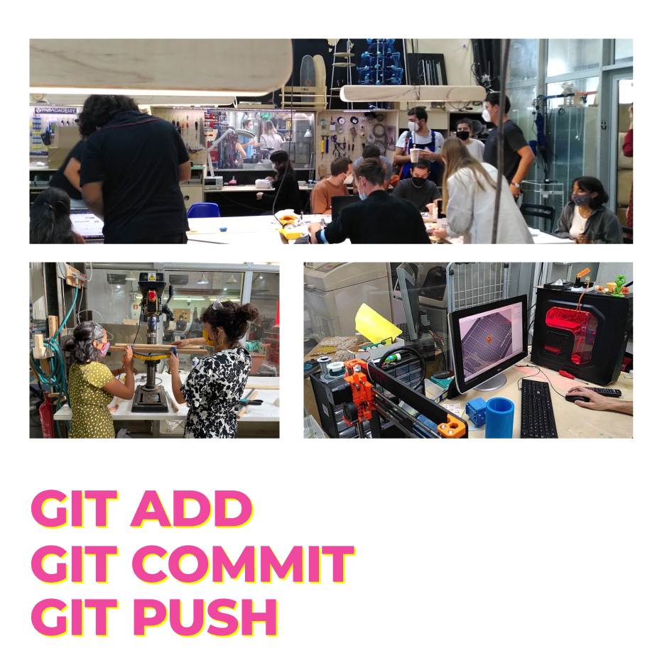
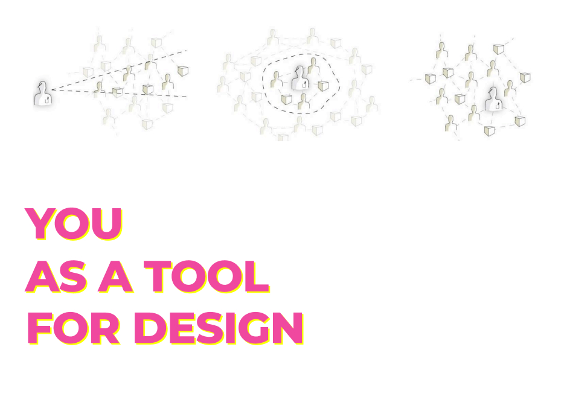
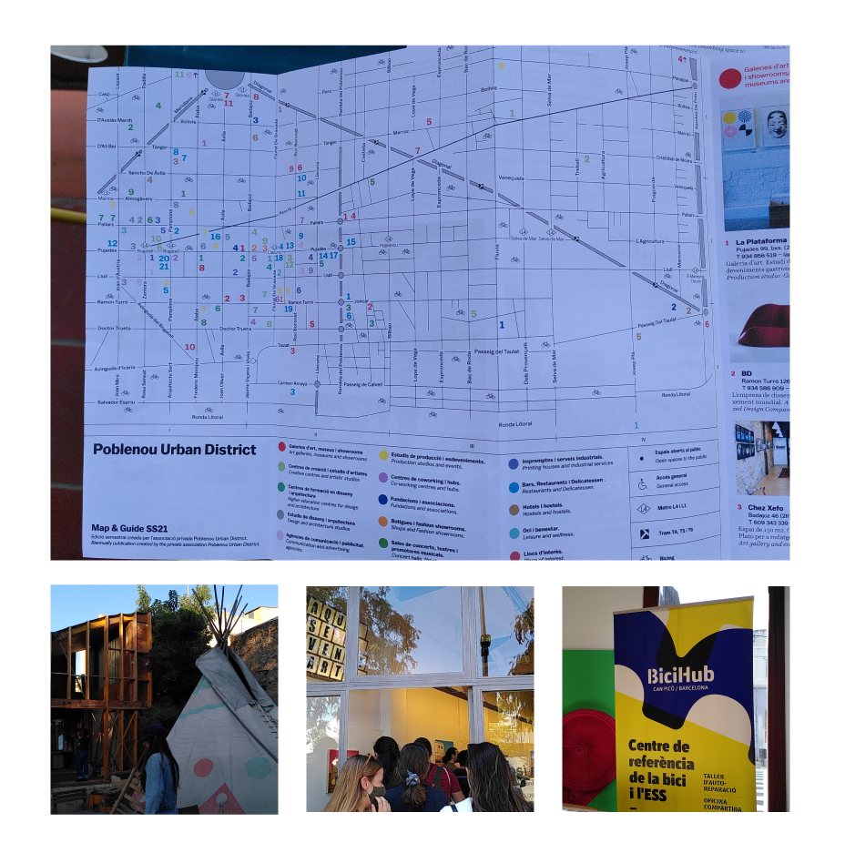

bootcamp
4th to 8th of October 2021
faculty: Oscar Tomico, Tomas Diez, Mariana Quintero, Chiara Dall'Olio
week reflections
After one month in Barcelona and now three weeks at IAAC it feels like so many things are already happening. In the city, in Poblenou, at IAAC, everywhere. My list of things to do, learn, watch, go to... keeps growing super fast!
pre-course: I started with 2 weeks of pre-course with electricity basics, Arduino programming, digital fabrication, 3D modelling softwares (Rhino, Fusion, Fusion Slicer), metal welding, laser cutting... and we ended the week with a challenge "One day to build a lamp" using all the tools available at IAAC.
Very intensive two weeks as I was not familiar at all with digital fabrication. It was a great way to start the year and makes me want to learn more about these new softwares and machines. Two weeks are obviously not enough to learn all about it but it gave me the impression that is was accessible. I think one of the objectives is that we see all these digital fabrication methods just as "classic tools" that anyone can use (just like a hammer would be).
IAAC community: We had a welcoming session to meet with the faculty members and the students of all masters at IAAC. It was impressive to see the variety of countries represented at the school and nice to see that many team members are IAAC alumni involved in teaching, local and international research projects...
MDEF program: Also a lot of countries and different backgrounds in MDEF. We started the week by individual presentations of our "fights" in the form of a poster now exposed in the classroom. I explained it below in the section what is my fight?.
This first week was also the occasion to visit Elisava as we are students of both schools, understand the strucutre and expectations of the year, meet with the faculty team, and start building our personal websites and host them on Git to keep track of what happens in the year. git add, git commit, git push.
approach to design: designing from a first person perspective. To be able to do so, we need to see ourselves as a tool for design so we need to "become experts of ourselves": know who we are, where we stand, connect with what we really care about, become experts of the context, create in context. In professional contexts, I have always been more designing in a second and third person perspective : conducting user research, organizing co-design workshops... so I am very curious and impatient to start.
More details in the section who am I? below.



discovering poblenou
We finished the first week with a tour of Poblenou with Chiara to see the following places:
La Plataforma: art gallery which is also home to the project Poblenou Urban District. I am very curious about the project and how they managed to engage all these different actors to promote the cultural community of Poblenou.Note: Check out the open night in November
TransfoLAB BCN:space dedicated to the transformation of waste
BiciHub:self repair bike workshop but also a central place for social and solidarity economyNote: Join the community next week to start fixing my bike.
ConnectHort (soon Bioma): Community garden, besides growing food, they have many different projects including cultural projects, organizing festivals (the first "Spicy Fest" was last Saturday), hosting concerts, experimenting sustainable architecture... Note: Every Saturday morning is dedicated to volunteering so I will go check it out next week!
These projects are very inspiring, and I would be interested in understanding the economic model behind them to be sustainable in the long term.
what is my fight?
It has been challenging identifying a unique fight.
Through my research projects as a student (inclusive public spaces, urban farming), some professional projects of the last few years (access to public services in rural areas) and my engagement in local non profit organizations (emergency aid for homeless people, locally supported agriculture in my neighborhood), I have been confronted with social problems that still need to be addressed.
In the meantime, we are in a context of climate emergency, the IPCC (International Panel for Climate Change) released their last report in August 2021, confirming that human activity is responsible for the situation. Beyond "my" fight, this is everyone's fight.
At a personal level, I lead "mini fights" by stoping eating meat, not travelling with the plane, reducing my waste and consuption to reduce my carbon footprint. Which I know will not change anything if it remains at the scale of personal initiatives. To meet the objectives set by the Paris Agreement on climate change, each person should emit only 2 tons of CO2 per year, and we are today closer to 8 tons in Europe so it would require a whole "shake" of the current economy model to reach these objectives.
My fights are at the intersection of these different topics:
- Encourage behavior change towards a sustainable lifestyle, imagine new resilient models
- Build new models to democratize access to local organic food (food can probably become a central point in my fight)
- Encourage citizens to take action and build new social ties
- New learning places, third places, places where people meet
- Commons
- Conviviality

who am I?
Concretely, we are evaluating where we are now (in terms of skills, knowledge and attitude) and where we want to be in a near future using MDEF community to build up and all the tutors and speakers we are going to meet throughout the year.
Starting to build this personal development plan or desired professional identity plan feels quite empowering. Indeed, it is rather uncommon in educational and professional systems (at least in the one I have experienced) to have an approach disconnected from a specific background or job description. I regret I didn't have the occasion to do it before. It would help so many students to create their journey.
The board below has two views:
- a view of "where I am today" and "where I want to be" in a near future.
- a view of what I would like to learn during the different seminars of the year.
I prefer to display a dynamic board as it will evolve every week and I will probably refer to it in the following weeks.